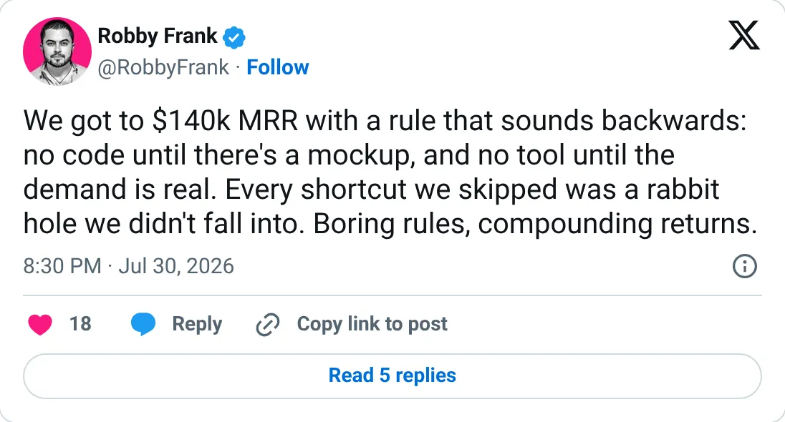
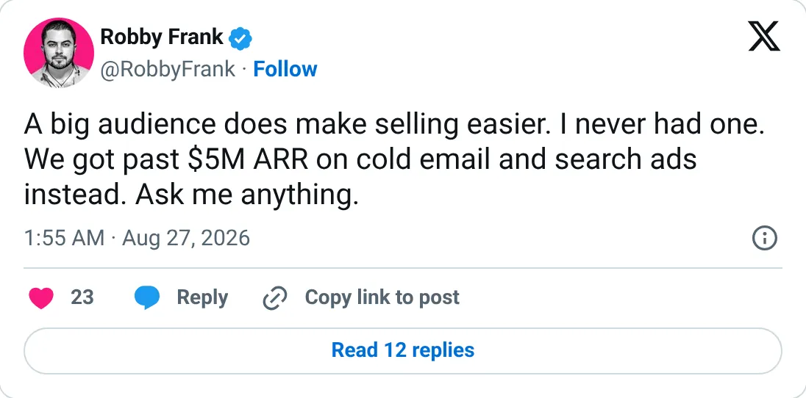

Not a pick
1Lookup
The ledger looks real. It is not one of the clearer things to start next.
$249.6K MRR
Should you build this
The money looks real, and it is still not a recommendation to start a copy. 1Lookup's ranked figure is TrustMRR MRR, $249.6K, with a real history back to a few hundred dollars in 2022. The cash months are not that calm: July 2026 verified revenue was $495.8K, August $407K, September $397K. Usage and annual billing do that. In July he also talked about getting to $140K MRR, which is lower than the ledger, and in August he said he was past $5M ARR. $5M is what you get by annualizing a peak cash month, not by multiplying the MRR. The headline this report uses is the one that holds. The ARR line in the tweets does not.
Cited from the captured posts, shown below: the earliest captured post (Jul 30, 2026) is the source for “Founder: "We got to $140k MRR with a rule…"”; the latest milestone (Aug 27, 2026) is the source for “Founder says he got past $5M ARR on cold email and search ads”.
Posts this is based on

Founder: "We got to $140k MRR with a rule…"
Open on X

Founder says he got past $5M ARR on cold email and search ads
Open on X
What the product is
Real-time phone, email and IP validation through one API, used for lead quality, fraud checks and deliverability. Founded Jan 2022 in the US. TrustMRR shows $5.27M all-time revenue and $410.8K over the last 30 days.
Public trail
- $550Verified revenue in Mar 2022 (first month tracked) source
- $3.4KVerified revenue in Feb 2023 source
- $2.9KVerified revenue in Sep 2023 source
- $1.8KVerified revenue in Apr 2024 source
- $42.4KVerified revenue in Dec 2024 source
- $146.1KVerified revenue in Jul 2025 source
- $231.5KVerified revenue in Feb 2026 source
- •Founder: "We got to $140k MRR with a rule…" source
- $495.8KVerified revenue in Jul 2026 (peak month) source
- •Founder says he got past $5M ARR on cold email and search ads source
- $407.1KVerified revenue in Aug 2026 source
- $396.9KVerified revenue in Sep 2026 (latest full month) source